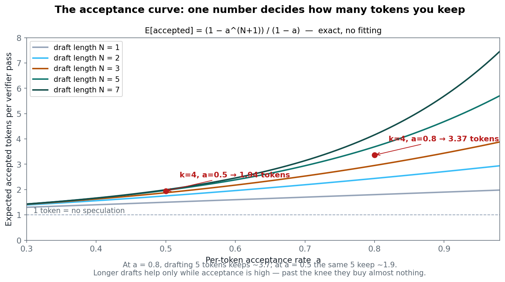
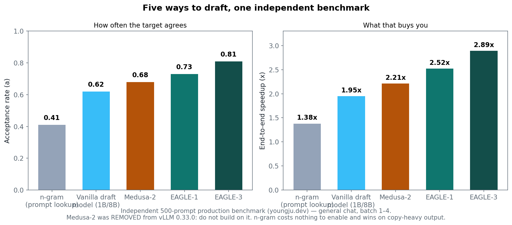
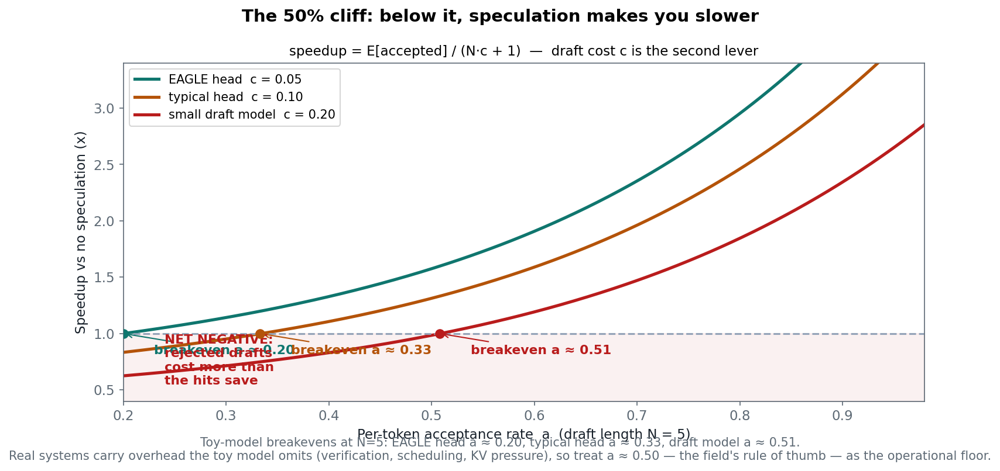
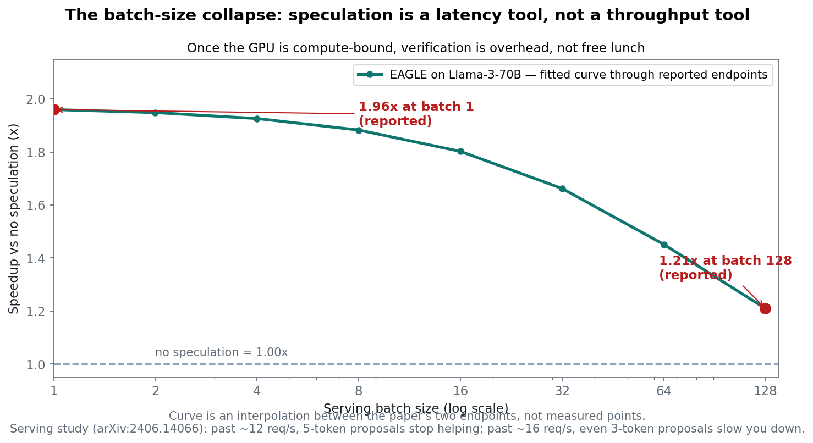

Your 70B model generates one token per forward pass. Each pass reads all 140 GB of weights from GPU memory while the arithmetic units sit mostly idle — decode is memory-bound, not compute-bound. Checking five candidate tokens in one pass costs barely more than checking one, because the weights are read once either way. Speculative decoding exploits exactly that: a cheap drafter guesses the next few tokens, the big model verifies them all in a single pass, and you keep the longest prefix it agrees with. Done right, it is a 2–3x speedup with zero change to the output distribution. Done wrong, it is a second model burning GPU time to produce tokens you throw away.
This is GDE post #5 in the vLLM serving series: the four ways to draft in vLLM 0.33.0, the one formula that decides whether drafting pays, and the three ways it breaks — with a notebook that measures your acceptance rate and emits the configs.
The ELI5 version
Imagine a senior engineer (the target model) and an intern (the draft model). The senior is slow but always right; the intern is fast and usually right. Instead of the senior writing every word herself, the intern drafts the next five words and the senior reads them once, crossing out from the first mistake. If the intern got four right, the senior kept four words for the price of one read — plus she writes one more word herself for free, the bonus token. If the intern got zero right, the senior still wrote one word, so the step was never wasted — it just cost the intern's time on top.
The intern's hit rate is everything. If she is right 80% of the time per word, five drafted words keep ~3.7. If she is right 50% of the time, the same five keep ~1.9. And the intern is not free: a 1B draft model for an 8B target costs real GPU time per step. Below some hit rate, the intern costs more than she saves — and the senior would have been faster alone.
How it works: propose, verify, keep the prefix
Speculative decoding is two independent ideas from 2022–2023 (Leviathan et al., Google Research, arXiv:2211.17192; Chen et al., DeepMind, arXiv:2302.01318), both proving the same thing: with rejection sampling, the output distribution is identical to the target model alone. Speculation never changes what the model says — only how fast it says it. That losslessness is why it is safe to turn on; the only question is whether it is faster.
The acceptance math is exact. Call the per-token acceptance probability a — the chance the target agrees with a drafted token, given all previous drafts were accepted. With draft length N, the expected number of tokens kept per verifier pass (including the bonus token) is:
E[kept] = (1 − a^(N+1)) / (1 − a)

At a = 0.8, drafting 5 tokens keeps ~3.7; at a = 0.5 the same 5 keep ~1.9. The curve has a knee: going from N=3 to N=7 at a = 0.5 buys 1.88 → 1.99 tokens — four extra draft tokens for +0.11 kept. Longer drafts help only while acceptance is high.
Speedup has a second lever: draft cost. If the draft costs a fraction c of one target pass, wall time per accepted token is (N·c + 1) / E[kept], so speedup = E[kept] / (N·c + 1). The optimal draft length grows with a and shrinks with c — there is no universal N. Our notebook computes it: with a cheap EAGLE head (c = 0.05), the optimal N is 3 at a = 0.5, 6 at a = 0.7, 8 at a = 0.8. With a full draft model (c = 0.20), the optimal N is 1 at a = 0.5 — one drafted token, because each additional draft costs more than it can return. Start at N=3–5 and sweep; never copy a headline's N.
The four ways to draft in vLLM 0.33.0. Everything is one JSON argument, --speculative-config, and the method decides where drafts come from:
| Method | Draft source | Needs a second artifact? | Best for |
|---|---|---|---|
ngram |
Copies n-grams from the prompt | No | Code edits, JSON extraction — output that repeats the input |
draft_model |
A small same-tokenizer sibling (e.g. 1B drafting for 8B) | Yes — the draft checkpoint | General use when no trained head exists |
eagle / eagle3 |
A trained head reading the target's own hidden states | Yes — the EAGLE head | Open-ended chat and code, highest acceptance |
mtp |
Multi-token-prediction heads built into the target checkpoint | No — ships inside the model | Qwen3.5, DeepSeek-V3/R1, GLM-5, Gemma 4 |
suffix |
Matches earlier generated text | No | Repetitive agent loops |
dflash / dspark |
Block-diffusion / semi-autoregressive drafters (new in 0.33, with refiners) | Yes | DeepSeek-V4 ships DSpark under mtp.* |
Two 0.33 changes to know if you are working from an older guide: Medusa and the MLP speculators were removed in 0.33.0 — migrate to EAGLE, MTP, or DSpark — and 0.33 adds an opt-in lossy verification policy (FLy: 1.041–1.310x over standard spec decode, median 1.147x, ≥96.3% accuracy retention in the PR table — covered in GDE #1). Standard verification stays the default and stays lossless. Draft models landed on Model Runner V2 in v0.31.0, so the whole stack runs on the current engine.
The state of the art: EAGLE-3 is the default, MTP is the future
EAGLE-3 (arXiv:2503.01840) is the current production standard, merged into vLLM, SGLang, and TensorRT-LLM. EAGLE-1 drafted from the target's hidden states with a one-layer transformer; EAGLE-2 added a dynamic draft tree — propose a small tree of candidates, verify them in one pass with tree attention, walk the best path. EAGLE-3 drops the feature-prediction loss entirely (train directly on token prediction) and adds training-time test: during training, the draft's own previous predictions are fed back as inputs, aligning train and test distributions so errors stop compounding. The paper claims 3.0–6.5x over vanilla decoding with acceptance lengths up to ~7.5 tokens on HumanEval. On instruction-following tasks, acceptance runs 0.80–0.88 on Llama and Qwen families (EAGLE-2: 0.72–0.78).
The independent numbers land below the paper's ceiling, as they should — and they still clear the bar. A 500-prompt production benchmark (youngju.dev) measured, at batch 1–4 on general chat:

Red Hat's vLLM testing measured EAGLE-3 at up to 2.5x across scenarios, with per-request latency down 1.8x on 8B and 1.6x on 70B at low request rates. On an H200, Spheron measured Llama 3.3 70B FP8 going from ~1,700 to ~6,200 tokens/sec with EAGLE-3 at batch 1–4 — 3.6x, and cost per 1M output tokens from ~$0.23 to ~$0.06 at May 2026 spot rates. Our toy speedup model reproduces the independent benchmark: at a = 0.81, N=5, c = 0.06 it predicts 2.91x against the measured 2.89x — a first-order model, but the right first order.
MTP is the zero-artifact option. Model makers increasingly ship the drafter inside the checkpoint: Qwen3.5, DeepSeek-V3/R1, GLM-5, and Google's Gemma 4 (Apache 2.0) all carry multi-token-prediction heads. Google claims up to 3x from Gemma 4's MTP drafters — a vendor claim, measure it yourself — but the operational point is real: {"method": "mtp", "num_speculative_tokens": 1} and there is no second download, no tokenizer-matching risk, no separate artifact to version. DeepSeek-V4 ships its DSpark draft under mtp.* the same way. Vendors now publish drafter training paths too: AMD's ROCm team described EAGLE-3 training on Instinct MI350X with Quark 0.13 on October 27, 2026, and NVIDIA's NeMo carries an EAGLE-3 recipe. A draft path you ruled out earlier this year may exist today.
Why it breaks
The 50% cliff. The toy model gives exact breakevens at N=5: an EAGLE head (c = 0.05) breaks even at a ≈ 0.20, a typical head (c = 0.10) at a ≈ 0.33, and a real draft model (c = 0.20) at a ≈ 0.51. That last number is where the field's rule of thumb comes from — practitioner guidance (Introl, Red Hat) converges on speculation turning net negative below roughly 50% acceptance. The toy model omits real overheads (verification of rejected tokens, draft scheduling, KV-cache pressure), so treat a ≈ 0.50 as the operational floor for all three, not just the draft-model case:

If your mean acceptance length is under ~2.0 tokens per step, turn speculation off for that workload. The fix is a better drafter or a shorter draft, never a longer one — a longer draft at low acceptance just proposes more tokens to reject.
The batch-size collapse. Speculation exploits idle GPU compute while decode is memory-bound. As the batch grows, the GPU becomes compute-bound on its own and verification turns into overhead. "Efficient Speculative Decoding for Llama at Scale" (arXiv:2508.08192) measured EAGLE on Llama-3-70B falling from 1.96x at batch 1 to 1.21x at batch 128 — the gain mostly gone. The serving study (arXiv:2406.14066) adds the request-rate version: past ~12 req/s, 5-token proposals stop helping; past ~16 req/s, even 3-token proposals slow you down.

vLLM 0.33 ships disable_by_batch_size for exactly this reason: turn speculation off above the batch where it stops paying on your hardware. Speculative decoding is a latency tool for memory-bound serving — a single-user assistant benefits most; a saturated multi-tenant API often sees no gain at all.
Three numbers called "acceptance rate" — read the right one. This is the most common way to misread a spec-decode dashboard. The papers' α is the per-token conditional probability (EAGLE-3: 0.80–0.88). vLLM's draft_acceptance_rate is accepted over all proposed draft tokens (num_accepted_draft_tokens / num_draft_tokens) — at α = 0.82, N=5 it reads ≈ 0.57, because tokens past the first rejection were proposed but never reached. And mean_acceptance_length is 1 + accepted / steps — tokens emitted per verify step including the bonus token, the number the speedup actually depends on. The notebook simulates all three from the same run so the mapping is explicit: α = 0.82 reads as vLLM rate 0.57 and mean acceptance length ~3.9. vLLM exposes them per-request in metrics.speculative_decoding (enable with --per-request-spec-decode-metrics, shape from PR #48915) and server-aggregated at /metrics as vllm:spec_decode_num_accepted_tokens_total / vllm:spec_decode_num_draft_tokens_total. Judge the drafter by mean acceptance length; judge the config by the speedup model.
The config bugs that eat the speedup. A draft model with a different tokenizer silently proposes tokens the target can never accept — acceptance collapses to near zero and the only symptom is a slow server. A draft that is too big (the 10–20x size-ratio rule: a 70B target pairs with a 3–8B draft; same-family pairs reach 75–85% acceptance) costs more per step than the hits return. Drafts starve the KV cache on long contexts, because every speculative token reserves cache it may not keep. And num_speculative_tokens set too high wastes verification on tokens past the knee — start at 3–5 and sweep. The DiffVibe 0.33 lab's discipline applies: run the baseline twice (the gap is your noise floor), sweep concurrency at 1, 4, and 16 (a method that wins at 1 can lose at 16), and check identical output first — a handful of mismatches at high concurrency is floating-point drift, most text differing is a config bug.
The interview angle
"How does speculative decoding work, and when does it not help?" The answer they want: a cheap drafter proposes N tokens, the target verifies them all in one forward pass, rejection sampling keeps the output distribution identical, and you keep the longest accepted prefix plus a bonus token. Then the number to have ready: expected kept tokens E = (1 − a^(N+1)) / (1 − a) — at a = 0.8, N=5 that's ~3.7. Then the follow-ups: "When would you turn it off?" — below ~50% acceptance, or at high batch/concurrency, where the GPU is compute-bound and verification is pure overhead. "EAGLE vs a draft model?" — EAGLE drafts from the target's hidden states, so it needs a trained head but reaches 0.80–0.88 acceptance; a draft model needs no training but a second artifact and tops out around 0.62 in the independent benchmark. "What does vLLM 0.33 change?" — one --speculative-config JSON, Medusa removed, MTP built into the new checkpoints, disable_by_batch_size for the batch collapse.
Takeaways
- Speculative decoding is lossless (rejection sampling, Leviathan et al. 2022 / Chen et al. 2023) — it never changes what the model says. It only pays when the drafter is good and the GPU is memory-bound.
- One formula decides it:
E[kept] = (1 − a^(N+1)) / (1 − a), andspeedup = E[kept] / (N·c + 1). Ata = 0.8, N=5 keeps ~3.7 tokens; ata = 0.5the same 5 keep ~1.9. Optimal N grows with acceptance and shrinks with draft cost — sweep it, don't copy it. - EAGLE-3 is the default: 0.80–0.88 acceptance, 2.89x in the independent 500-prompt benchmark, up to 2.5x in Red Hat's vLLM testing, 3.6x on an H200 for Llama 3.3 70B FP8. MTP is the zero-artifact option when the checkpoint ships the heads.
- The 50% cliff is real: a draft model breaks even at
a ≈ 0.51in the toy model, and real overheads push every method's breakeven up. Mean acceptance length under ~2.0 tokens/step means turn it off. - The batch collapse is real too: 1.96x at batch 1 → 1.21x at batch 128, and past ~12 req/s even 5-token proposals stop helping. Use
disable_by_batch_size; speculation is a latency tool, not a throughput tool. - Three numbers share one name: the papers'
α(0.80–0.88 for EAGLE-3), vLLM'sdraft_acceptance_rate(accepted / all proposed — 0.57 at the sameα, N=5), andmean_acceptance_length(tokens per step including bonus — ~3.9). Read the right one before concluding your drafter is broken. - vLLM 0.33: one
--speculative-configJSON; Medusa and MLP speculators removed; DFlash/DSpark refiners and opt-in lossy verification added; per-request acceptance metrics inmetrics.speculative_decoding.
This is post #5 of the GDE vLLM serving series — next is the low-precision KV cache: FP8 and NVFP4, and the memory arithmetic, on Tue Nov 24. Follow along on dev.to/danielsamfdo for the next part.
Honesty note: the acceptance and speedup math is exact given the per-token acceptance model (independent acceptance, the standard toy model); the notebook's breakeven and optimal-N tables are computed from it. The batch-size curve is an exponential interpolation between the two endpoints reported in arXiv:2508.08192 (1.96x at batch 1, 1.21x at batch 128), not measured points. All benchmark figures are the cited sources' own reported results, not independently tested here: EAGLE-3 paper claims (arXiv:2503.01840, 3.0–6.5x, up to ~7.5 accepted tokens on HumanEval), youngju.dev 500-prompt benchmark (2.89x EAGLE-3), Red Hat vLLM testing (up to 2.5x), Spheron H200 numbers (May 2026 spot pricing), Google's Gemma 4 "up to 3x" MTP claim, and the arXiv:2406.14066 serving thresholds (~12/~16 req/s). The 10–20x draft/target size rule and same-family 75–85% acceptance are practitioner guidance, not a paper result. No Meta content, per standing exclusion.